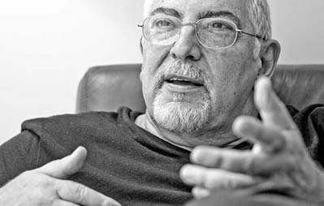

Mi nombre es Samantha Reyes Castañeda, nací un 23 de agosto de 1997 en la ciudad de Guadalajara en Jalisco, México. Mis primeros ocho años los viví en esta misma ciudad, sin embargo al cumplir los 9 años fue necesario mudarme a Tlajomulco de Zúñiga dónde finalicé mi educación primaria para depués continuar con la secundaria y preparatoria. Fue en esta última dónde me comencé a interesar por las tecnologías de la información así que me inscibí a un taller de programación y diseño de páginas web y fue ahí dónde mi interés por la programación aumentó. Al terminar la preparatoria ya sabía qué sería lo que estudiaría, ingresé a la Universidad de Guadalajara a la carrera de Ingeniería informática. Es así cómo actualmente me encuentro estudiando esto.
Jorge Bucay realizó su formación académica en la Universidad de Buenos Aires. Se graduó como médico en 1973 y se especializó en enfermedades mentales en el servicio de interconsulta del hospital del Carmen de la ciudad de California y en la clínica Santa Mónica de la Provincia de Buenos Aires. Comenzó su carrera de psicoterapeuta en el equipo de interconsulta del Colegio Pirovano. Luego, se formó como psicoterapeuta Gestáltico en Argentina y Estados Unidos, asistiendo a cursos, seminarios y congresos en Argentina, Estados Unidos, España e Italia.Integró la Delegación Argentina que participó del Congreso Gestáltico Internacional de 1997, realizado en Cleveland, Estados Unidos.
Trabajó como supervisor didáctico y coordinador de laboratorios gestálticos, fue miembro de la Asociación Americana de Terapia Gestáltica y coordinador de grupos terapéuticos y docentes en Granada, España y en México.Se destacó sobre todo por su presencia en numerosos medios de comunicación como colaborador e incluso como conductor de su propio programa televisivo.
Se define como "ayudador profesional" ya que, según él, mediante sus conferencias y sus libros procura ofrecer herramientas terapéuticas, para que cada quien sea capaz de sanarse a sí mismo.

Para obtener más información PRUEBA GITclick aquí.
| Conocimiento Lenguajes | ||||
|---|---|---|---|---|
| JS | PHP | CSS | Node | |
| % | ||||
| 1% | 20% | 10% | 0% | |
| 15% | 13% | 85% | 71% | |